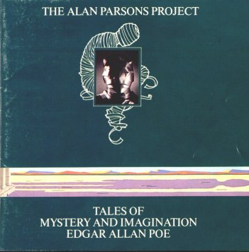
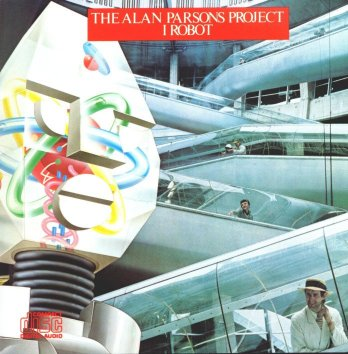
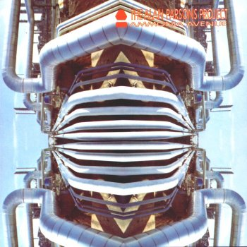
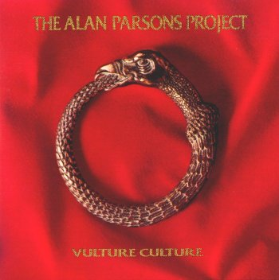
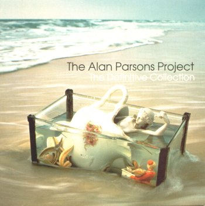
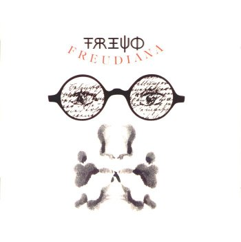
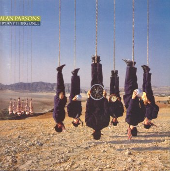
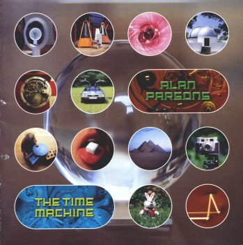
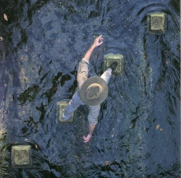

|
|
|
| ***** | Outstanding |
| **** | Excellent |
| *** | Good |
| ** | Bad |
| * | Ugly |
| Based on the poetry of Edgar Allan Poe, Tales unifies itself through the music as much as it does through the poetry. The instrumental theme of "A Dream within a Dream" recurs throughout the album in varied contexts, in the hit "Doctor Tarr and Professor Fether" and in the instrumental "Pavane." (This theme can also be heard at the end of the I Robot album.) The 1987 version adds new guitar solos and the piquant narration of Orson Wells. Greatest moments: (1) "Prelude" to "The Fall of the House of Usher"; (2) the theatrical trio in "To One in Paradise," sung by Terry Sylvester (of the Hollies), Eric Woolfson, and Alan Parsons. |  |
|  | Based on literary work by Isaac Asimov, I Robot uses a seamless collection of songs to portray its futuristic theme. The four instrumentals--the most of any Project album--are the glue that holds the songs together. In "Total Eclipse," Andrew Powell earns solo composition credit, showing his stylistic indebtedness to texture-music composer György Ligeti, with whom Powell studied. Greatest moment: the meditative organ sound and the theme of self-resignation in "Don't Let It Show," which remained the Project's most touching ballad until "Old and Wise." |
| Certifying gold, Ammonia Avenue still stands as Parsons's last big commercial success. The album moved the Project one step further away from the orchestral rock of their early albums, concentrating instead on pop elements that made Eye in the Sky successful. "Prime Time," at least in sound, is a near clone of "Eye in the Sky." "Since the Last Goodbye" introduced a simpler approach to Project ballads. And the catchy "Don't Anwer Me" became the Project's final top 20 hit. Still, the title track remains true to the Project's orchestral roots. Greatest moment: the instrumental interlude to "Ammonia Avenue," which vies for the Project's greatest moment ever. |  |
|  | In 1984, the Project's orchestral arranger, Andrew Powell, temporarily left the band to devote time to the Ladyhawke film project. Powell's presence is missed on Vulture Culture. Nevertheless, the band perfected their pop/rock sound and produced a quality surprisingly consistent from song to song, to compensate for Powell's absence. "Hawkeye" is one of the Project's best instrumentals to date. "Somebody Out There" reexplores the paranoia theme of I Robot's "Some Other Time." Greatest moments: (1) the song "Vulture Culture," particularly the bass ostinato and the sax choruses; (2) Ian Bairnson's guitar solo at the end of "The Same Old Sun." |
| This remastered set was the first compilation to contain tracks from Tales to Parsons's first "solo" project, Try Anything Once. The sound improves on previously available recordings, especially the older ones. Further, this is the first CD to contain the full version of "Standing on Higher Ground." The chronological tracking gives the listener a guided tour through Project history. The track selection is a little suspect, however, since "Limelight" and some of the longer classics are excluded. Greatest moment: the Pyramid tracks, which gain the most from remastering. |  |
|  | This modern adaptation of all things Freudian evolved from what was supposed to be the band's eleventh "project" to a Woolfson stage musical. The album Freudiana falls somewhere in between. While exhibiting many of the characters and characteristics of an Alan Parsons Project, for better or worse Woolfson's theatrical leanings take over. This makes for some great pop/rock tunes--featuring guest vocalists Leo Sayer and Kiki Dee as well as Project regulars--and some more stagey numbers. Surprisingly, the three instrumentals lack the excitement of the Project's previous ones. Greatest moments: (1) the attractive comical number "Little Hans," often compared to the Beatles' "Penny Lane"; (2) the saxophone interludes of "Let Yourself Go." |
| Try Anything Once is at the same time a study in consistency and variety. With no programmatic theme to rule the concept of the album, it is the music, instead, that rules. Parsons juxtaposes cohesiveness and disparateness most obviously in "Jigue" and "Re-jigue," which apply the same melody to two different genres of music. Ambrosia member David Pack is a most welcome addition to the band. With the absense of Eric Woolfson, Eric Stewart becomes the most frequent lead vocalist. Greatest moments: (1) "Mr. Time," introducing Jacqui Copeland as lead vocalist; (2) "Siren Song" (sung by Stewart), reminiscent of "To One in Paradise"; (3) "Oh Life" featuring Pack's vocals and Parsons's flute playing. |  |
|  | With The Time Machine, Parsons concentrated on his role as producer and engineer, allowing the talents of "musical associates" Ian Bairnson and Stuart Elliott to shine. The music hints at a variety of styles, including blues and folk. Parsons's production is at its most ethereal since Eye in the Sky, effectively reflecting the mysticism of time travel. Lyrics invoke the dead (in the song "Call Up") as well as classic Project songs. The disc features Bairnson's recorded debut as saxophonist, and guest vocalists Tony Hadley (of Spandau Ballet), Maire Brennan (of Clannad), and Beverley Craven. The Japanese version includes the bonus instrumental "Beginnings," featuring Parsons as narrator. Greatest moment: the return of Colin Blunstone's vocals on "Ignorance Is Bliss." |
| Recorded without longtime bandmates Ian Bairnson and Stuart Elliott, A Valid Path is really Parsons's first solo album. A la Santana, nearly every track is a collaboration, and Parsons's guest list is a veritable "who's who" of electronica (Shpongle, The Crystal Method, Nortec Collective, Uberzone), and rock (Pink Floyd's David Gilmour). That said, Parsons remains the driving creative force behind every track, even assuming lead vocal and guitar duties for "We Play the Game." "More Lost without You" and "You Can Run"--featuring P. J. Olsson and David Pack, respectively--combine elements of rock/pop with electronica to great effect. But perhaps greater weight is given to instrumentals, the most noteworthy of which is "Tijuanic," an interesting mix of electronica and mariachi (something Nortec Collective is known for), with some microtonal glissandi thrown in for color. Two classic Project tracks are revisited with the aid of Jeremy Parsons (Alan's son), who here proves himself a formidable programmer. "Mammagamma 04" works better stylistically here than it did in its classic presentation on Eye in the Sky; "A Recurring Dream within a Dream," however, serves primarily to evoke the Tales opener, a distracting detour from the more "valid path" of new compositions. The album ends with a John Cleese cameo that will delight Monty Python fans, and a fun reference to the Beach Boys' "Pet Sounds." Greatest moment: Parsons's lead vocal on the Crystal Method collaboration "We Play the Game." |  |
|
|
|


{kind=link}
{kind=link}
{kind=link}
{kind=link}
{kind=link}
{kind=link}
{kind=link}
{kind=link}
{kind=link}